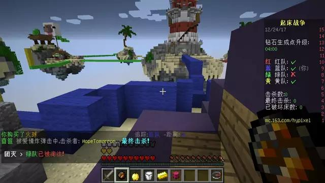
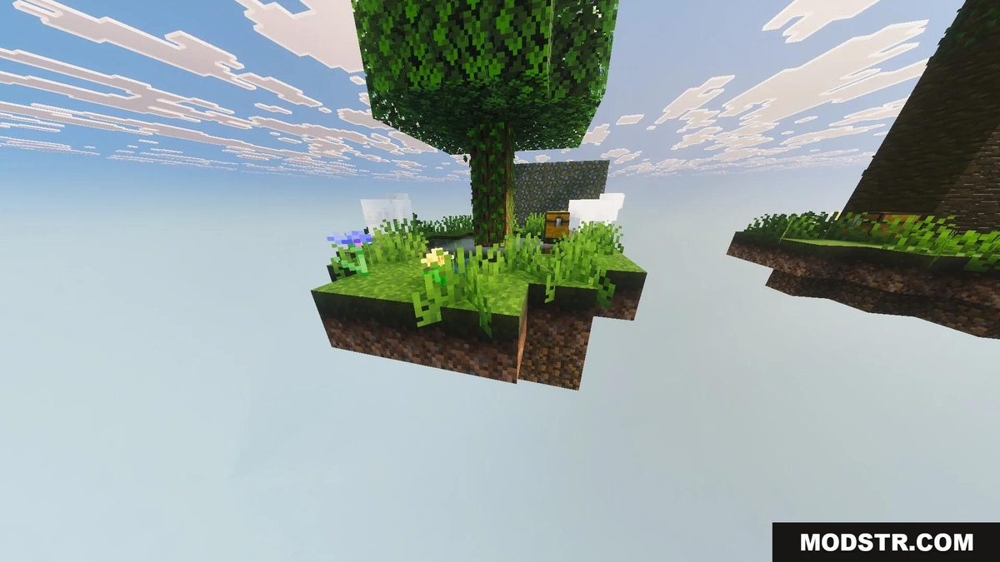

Maps worth playing
When vanilla survival gets stale, try one of these. All made by other players; click a card for the download page.
Puzzle and adventure

The Lost Ship
A puzzle map set on a ship full of secrets and with more plot twists than I expected. It took me an afternoon to finish, and I did not see the ending coming.
Puzzle Adventure
This Ain't No Normal Adventure
Made by a Chinese creator: puzzles, fights and a lot of hidden mechanics. The author buried references everywhere and I laughed out loud several times.
Puzzle Chinese
Adventure World series
Several parts, each with a big map and a story that carries over. I played from part one to part three, like watching a series.
Adventure SeriesPvP

Bed Wars
Four teams of four, defend your bed and break theirs, last team standing wins. I played hundreds of rounds and peaked at Diamond. My reflexes are gone now.
PvP TeamSky Wars
Everyone starts on their own island, loots their chests, and the last player alive wins. I prefer solo — no teammates to coordinate with.
PvP Solo100 Players Hunt
A hundred players chase one runner and everyone bets on who survives. Watching it is more tense than playing it — produced by Fangkuaizhipianju.
Show MultiplayerSurvival challenges

SkyBlock
One small island, one tree and one chest, and you build everything from the resource loop. A classic — I play it again every version.
Survival ClassicSkyGrid
The world is a grid of single blocks, one material per cell, and every step can kill you. I fell into lava three times, got angry, and uninstalled it.
Survival DifficultOne Block
You get one block. Break it, it regenerates, and the deeper you go the stranger the drops. I played for a week and was stunned when the end portal finally appeared.
Survival Creative